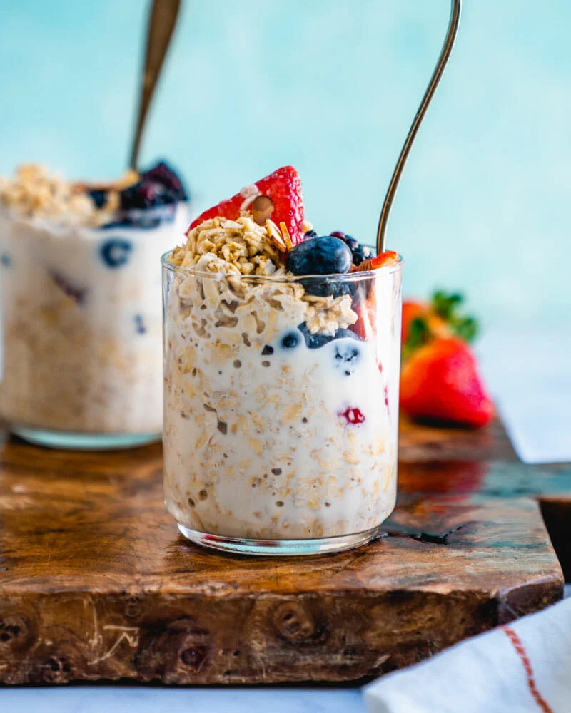

How to make Overnight Oats

Description
Nice and easy overnight oat receipe that will ensure a delicious breakfast in the morning!
Ingredients
- 1 ⅓ cups Almond Breeze Vanilla almondmilk
- 1 cup rolled oats
- ¼ cup granola (Optional)
- 3 tablespoons coarsely chopped Blue Diamond® Honey Roasted Almonds (Optional)
Steps
- Stir together almondmilk and oats in a medium bowl. Spoon into 2 small bowls or canning jars if desired.
Cover and refrigerate 8 hours to overnight, or for up to 3 days.
- Before eating, top with granola and almonds, if desired.